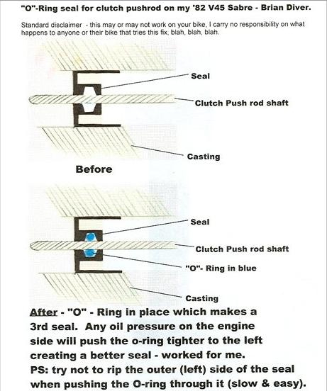

Clutch Push-rod Seal (alternative 2)
- Use an O-Ring to make a "3rd" seal
- Remove slave cylinder and remove push-rod
- Insert O-ring past first seal
- Reinsert push-rod ensuring o-ring fits around it and is located after first seal, but before second seal
- See picture below ... courtesy of Brian Diver
